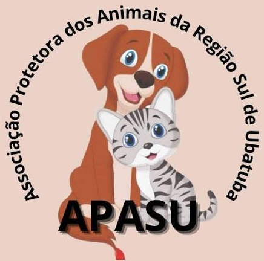
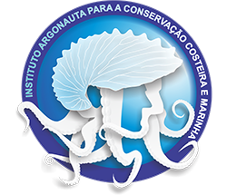

Ubatuba
Localizada no Litoral Norte do Estado de São Paulo, Ubatuba destaca-se por sua rica biodiversidade, extensa área de Mata Atlântica preservada e mais de 100 praias, características que reforçam a importância das ações voltadas à proteção e ao bem-estar animal. O município conta com a atuação de organizações não governamentais (ONGs), protetores independentes e do Departamento de Proteção e Bem-Estar Animal, que desenvolvem atividades de resgate, acolhimento, tratamento, castração, adoção responsável e conscientização da população sobre a guarda responsável de animais.
ONG Alma Vira-Lata 🐕
- ✓ Instagram: @almaviralata
- ✓ Doe por PIX: CNPJ: 15.471.624/0001-64
- ✓ WhatsApp (12) 98833-0974
- ✓ E-MAIL: ALMAVIRALATA@GMAIL.COM
- Não possui uma sede física.

APASU (Associação Protetora dos Animais da Região Sul de Ubatuba)
- ✓ WhatsApp: (12) 98813-8099 (somente mensagens)
- ✓ E-mail: APASUBATUBA@GMAIL.COM.BR

Instituto Argonauta
- ✓ Instagram: @institutoargonauta
- ✓ Av. Governador Abreu Sodré 1067, Perequê-Açú - Ubatuba-SP CEP: 11.695-240
- ✓ Telefones: (12) 3833 4863 | (12) 3833 5753
- ✓ E-mail:contato@institutoargonauta.org.br

Polícia Ambiental
- ✓ RUA PLINIO DE FRANÇA, 51 SACO DO RIBEIRA - UBATUBA CEP.11680-000
- ✓ Telefones: (12)3842-0123 (12)3842-0355
- ✓ E-mail: 3bpamb5cia2pel@policiamilitar.sp.gov.br
- Emergências e Flagrantes: 190 (Polícia Militar)